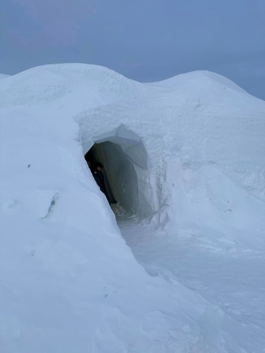
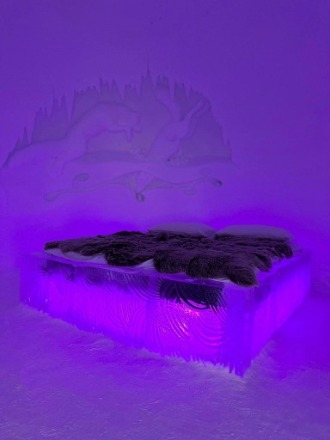

～雪地上的一盆火～
親身經歷在冰天雪地舉目盡是白茫茫厚雪的地方，再加上一些想像力才能明白「火」、「能源」，在第二次工業革命前是多麼珍稀的資源。小時候讀鑿壁引光的故事時總覺得這情節太矯情誇張。事實上在近代能源與科技革命前，「能源」（照明、煮食、取暖…）是多麼地昂貴奢侈！公元前1750年，一個古巴比倫人需要幹上50個小時的苦力才能換來在燒芝麻油的油燈旁閱讀一小時楔形文字石板的時間。1800年，一個英國人需要用6個小時的工作換取一小時的蠟燭燃燒時間。想像一下面對捉襟見肘的家庭預算，大多數的平民只能無奈地忍受夜晚黑燈瞎火的日子。1880年，人們需要工作15分鐘以換取一小時的煤油燈照明。1950年，一小時的白熾燈照明成本降到相當於工人8秒鐘的工作。1994年，小型螺口日光燈一小時的照明成本僅相當於半秒鐘的工時，照明成本降到了兩個世紀前的1/43000。很難想像我們褪了體毛的老祖宗是如何辛苦地熬過冰河時期。明白了以上，我們應理解在極地住冰屋、吃生肉的因努伊特人可不是笨蛋，他們是北極圈內真正的求生高手！因努伊特人能在連維京人都無法長居的格陵蘭存活下來，靠得是令人嘆為觀止的智慧與技能。（有興趣的可以找YT影片看）

